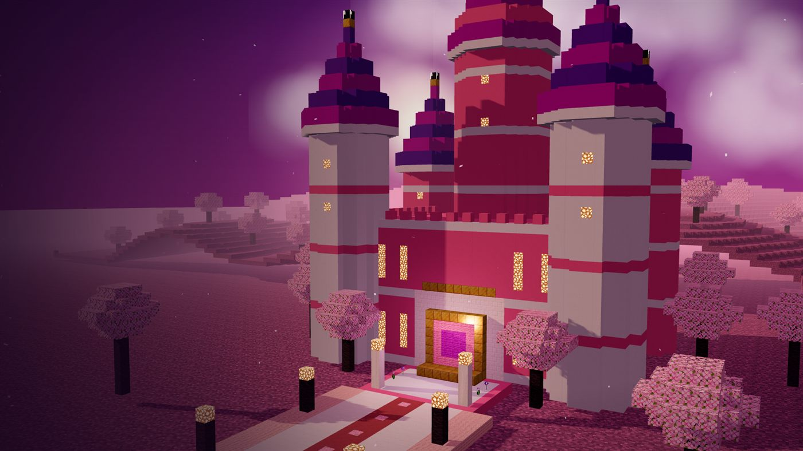

Forge 1.20.1
Peachxsy Alley
Aventura de jefes estructurada en diez dimensiones, cada una con su arena, su historia introductoria y un combate por fases. Integra jefes de Cataclysm, Mowzie's Mobs, Bosses of Mass Destruction, Aquamirae e Iron's Spells, renombrados y adaptados a la narrativa.
- 10 dimensiones con arena y ambientación propias
- 10 jefes con cinemática previa, fases y música
- Contenido propio: objetos, texturas, libro de misiones y pantalla de título